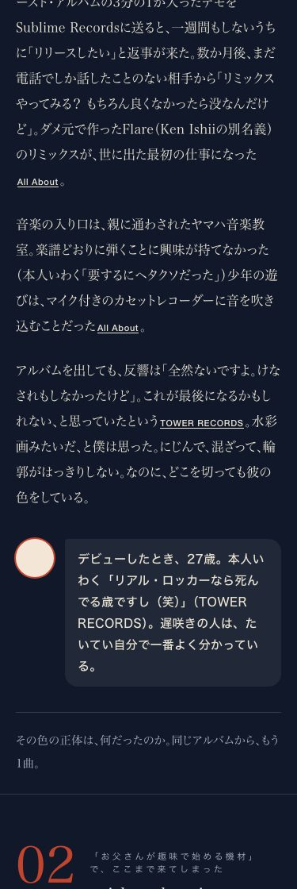
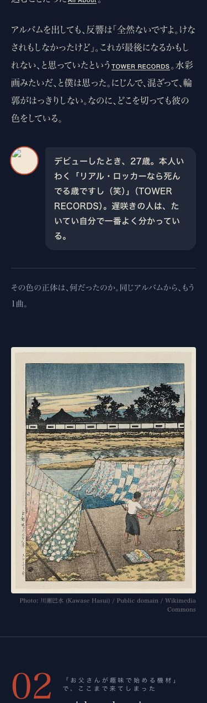
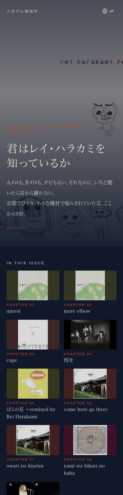

実測: 本番用HTML 83589 bytes（公開中 80527 bytes）／雰囲気の静止画 data-fk 6（公開中 0）／章 9／吹き出し 6／訳キー 124/124 付け替え／出典 25/25 が HTTP 200／撮影は playwright 無音 headless（is_mobile）viewport 幅375px 高さ812px、全画面スクショ 幅375px 高さ24179px（後）・高さ21325px（前）



| 確認項目 | 結果 |
|---|---|
| 後退の関所 koutai_kanmon --check-files | PASS |
| 見た目の統一 unify_look --check（ハラカミ） | OK |
| 物語の関所 magazine_monogatari_kanmon | PASS |
| 出典25本が今も開ける（curl） | 25/25 が 200 |
| 訳キー124個を新しい番号へ付け替え（取りこぼし0） | 124/124 |
| joy-relief-station main に合流 | commit 4457203 |
| Lovable の公開（本番の配信IDが変わる） | 押せない（鍵が切れている・同意のやり直し待ち） |